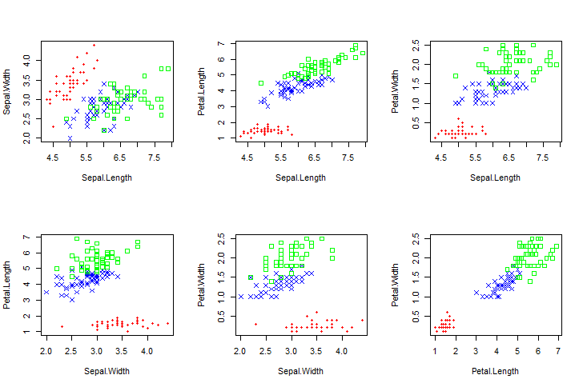

Support Vector Machines¶
Theory¶
The support vector machine (SVM) is a classification method which groups similar individuals into classes depending on their characteristics. The example below left shows 10 individuals classed either as positive (+) or negative (-). The individuals can be divided into two classes by putting a straight line between them, they are linearly separable. However, several different lines can be fitted and we want to choose the best line. The support vector machine does this by maximizing the distance between classes in order to minimize the probability that a new individual is misclassified by using a maximum margin separator. The maximum margin separator is a decision boundary which maximizes the distance between the closest points to the line and the line itself.
{kind=link}
Fitting a two-dimensional maximum margin separator only works in linearly separable data sets such as in the illustration above left. If a data set is not linearly separable in two-dimensional space, such as the illustration above right, we can map the individuals into a higher dimensional space and then linearly separate them in this higher dimension. This process can be computationally expensive so we use the kernel trick which avoids the need to explicity map the individuals into another space. The kernel trick implicity maps the data by calculating the dot product of all pairs in the mapped space. In most cases, we can continue to map the data, implicity, into higher and higher dimensions until we finally arrive at a linearly separable solution.
For an excellent introduction to the mathematics behind support vector machines and the kernel trick, I can highly recommend the online MIT lecture from Patrick Winston. This is much more enjoyable and easier than reading a written version. Very generally, in order to maximize the margin separator, the SVM minimizes a Lagrangian function resulting in a quadratic optimization problem with a single global maximum. This resulting problem can then be solved using mathematical programming.
However, this lecture does not explain how the problem is actually solved by machine learning. That is to say, how an algorithm iteratively solves the quadratic optimization problem. The most common algorithm for solving the SVM optimization problem is the Sequential Minimal Optimization (SMO) method which breaks the problem into sub-problems that can be solved analytically rather than numerically. In John C. Platt’s article Sequential Minimal Optimization: A Fast Algorithm for Training Support Vector Machines (1998) he defines a more complete optimization problem and develops the SMO method which solves the smallest possible optimization problem at each step. Usually this is for just two Lagrange multipliers at each step which can be done analytically instead of numerically. The algorithm first calculates the constraints on the multipliers and then sovles the optimization problem, holding all other multipliers constant. Although there are many sub-problems each of them is solved rapidly, since they are solved analytically, and so the overall performance is fast. The algorithm also uses a heuristic to choose which multipliers to optimize at each step in order to increase efficiency.
Advantages and Disadvantages¶
The SVM works well on a wide range of problems. It is robust to noise since it only considers the individuals closest to the maximum margin separator. This makes it is less prone to overfitting a model. It also works well with smaller training subsets because, again, it only uses some of the individuals to calculate the maximum margin separator. Another advantage is that it does not become trapped in local minima because the optimization problem is quadratic. However, the SVM is not without disadvantages. The SVM is computationally expensive meaning that learning takes a long time for very large data sets. Also, it is a binary classifier so in the case of multi-class classification we must do multiple pair-wise classifications - one class against all others, for each class - increasing the learning time. Lastly, the kernel trick is not necessarily as simple as it first seems since the choice of kernel depends on the data set. Furthermore, key parameters need to be set correctly meaning that several models may need to be tested before finding a satisfactory model.
Code¶
For a basic introduction into SVM in R we’ll use the classic Fisher’s Iris data. To get some background on this data set use ?iris.
1. Data Visualisation¶
Let’s start by looking at the data so that we know what we’re working with. This code plots the classes setosa, versicolor and virginica for each variable combination.
n=nrow(iris) #get the number of rows in the data set
#Create a colour vector for each class
irisCol=rep('green',n)
irisCol[which(iris[,5]=="setosa")]<-'red'
irisCol[which(iris[,5]=="versicolor")]<-'blue'
#Create a symbol vector for each class
irisChar=rep(0,n)
irisChar[which(iris[,5]=="setosa")]<-20
irisChar[which(iris[,5]=="versicolor")]<-4
#Plot the scatter graphs for each combination of the variables
par(mfrow=c(2,3)) #set the layout
for( i in 1:3){
for(j in 2:4){
if(i<j){
plot(iris[,i], iris[,j], pch=irisChar, col=irisCol,
xlab=colnames(iris)[i],ylab=colnames(iris)[j])
}
}
}
Below, we can see that setosa, except in the first graph, is linearly separable fromt the other two types of iris for each combination of variables. For the other two types, versicolor and virginica, we can see that the classes overlap. In paritcular, the combination of sepal width and sepal length does a particularly poor job of differentiating the two.
Legend : setosa , versicolor , virginica
{kind=link}
Since this data set is multiclass and not linearly separable, the SVM will have to do pair-wise binary classification and also use a kernal function to implicity map the observations into a high dimension. Luckily for us, this is done automatically.
2. Classification¶
Firstly let’s build a test and data training set before training the classfier. Here, we’ll use the package kernlab but the package e1071 also has an SVM function. The advantage of kernlab is the choice of kernel functions and the ability to create your own kernels. It also produces a much more attractive plot, unfortunately the plot only works for binary classification.
#Build test and train sub-sets (sampling evenly from each type)
srows=c(sample(1:50,30), sample(51:100,30),sample(101:150,30))
irisTrain=iris[srows,];irisTest=iris[-srows,]
# Load the kernlab package
library(kernlab)
#Train the classifier
filter <- ksvm(Species~., data=irisTrain, kernel='rbfdot',C=5, cross=3)
# Attributes that you can access
attributes(filter) # list of all attributes
SVindex(filter) # the indices of all of the support vectors
alphaindex(filter)[[1]] # the support vector indices for the first of the three boundaries.
#Predict the values for the test subset
pred<-predict(filter, irisTest[,-5])
The first parameter in the ksvm() function, Species~. , indicates that the column labelled ‘Species’ is the independant variable and the ‘.’ indicates that we use all the other columns in the input data set. The kernel used is rbfdot, the Gaussian radial basis kernel function, this is a general purpose kernel with no a priori assumptions about the data. Information on the choice of kernel functions can be found in the package documentation. The choice of kernel impacts the quality of the results and not all kernels are appropriate for all data types, even the general purpose ones. C is the cost of constraint violation, the default value is 1. Finally, cross= k indicates a k-fold cross-validation is to be done on the training data. For classification, the quality measure is the accuracy rate.
By default the dependant and independant variables are scaled to zero mean and unit variance but an argument scaled also allows user-defined scaling functions. The output of predict() accounts for scaling and returns the unscaled predictions.
3. Validation¶
This code displays the confusion matrix and calculates the predication accuray which allows the classification quality to be evaluated.
#Display the confusion matrix
table(pred,irisTest[,5])
# Calculate accuracy
sum(pred==irisTest[,5])/length(pred)*100
The SVM has done fairly well with a 97% accuracy rate and 2 misclassified observations.
{kind=link}
To see an example of the plot available in the kernlab package we are going to modify the data so that there are only two classes and choose only two columns (features) to pass to the function.
# First group the versicolor and virignica examples together.
irisMod<-iris
levels(irisMod$Species)[levels(irisMod$Species)=="virginica"] <- "vers_virg"
levels(irisMod$Species)[levels(irisMod$Species)=="versicolor"] <- "vers_virg"
#Create the train and test data sets
srows=c(sample(1:50,30),sample(51:150,30))
irisTrain=irisMod[srows,] ; irisTest=irisMod[-srows,]
#Train the classifier
filter<- ksvm(Species~Petal.Length + Petal.Width, data=irisTrain, kernel='rbfdot', kpar=list(sigma=0.05),C=5, cross=3)
par(mfrow=c(1,1))# undoes the layout change for the intial graphs
plot(filter, data=irisTrain)
irisTrain[SVindex(filter),-c(1,2)] #get the support vectors
#Check accuracy
pred=predict(filter, irisTest[,-5])
table(pred,irisTest[,5])
sum(pred==irisTest[,5])/length(pred)*100
For my train and test data sets I had a 99% accuracy rate which is not suprising given the visually nicely separated classes. Your results will vary since you will not have the same train and test data sets. The model, graphed below, only had 6 support vectors. Try removing the kpar argument, the results are nowhere near as nice. Although this gave me a 100% accuracy rate, it resulted in 22 support vectors and a graph showing that the model was overfitted. Note that the support vector markers are coloured black in the graph.
{kind=link}
4. Tuning¶
How did I know I would get a better result by adding the kernel parameter of sigma=0.05? By trial and error! This is not a very time effective method and so a package for tuning models from the kernlab package has been created called mlr. The associated github tutorial is extremely well explained.
For our model we have two values to tune: sigma from the Gaussian radial basis function (below) and C, the cost of violating a constraint.
To choose a possible combination of the parameters, we will first specify the possible values then iterate through the different combinations of parameters, extracting the cross-validation error of the SVM at each iteration.
# Define possible parameter values
clist <- 2^seq(-8,8) ; nc <- length(clist)
sigmalist <- 2^seq(-5,5) ; nsigma <- length(sigmalist)
#Initialise the matrix of errors
error <- matrix(0,nrow=nc,ncol=nsigma)
#Calculate the error for each combination
for (i in seq(nc)) {
for (j in seq(nsigma)) {
filter <- ksvm(Species~Petal.Length + Petal.Width,data=irisTrain,kernel='rbfdot',kpar=list(sigma=sigmalist[j]),C=clist[i],cross=3)
error[i,j] <- cross(filter) #returns the cross-validation error
}
}
# Graph the result
library(lattice) #load the package lattice
dimnames(error) <- list(C=round(clist,3),sigma=round(sigmalist,3)) # Add labels
jet.colors <- colorRampPalette(c("#00007F", "blue", "#007FFF", "cyan", "#7FFF7F", "yellow", "#FF7F00", "red", "#7F0000")) # Customise the color ramp
levelplot(error,scales=list(x=list(rot=90)),xlab="C",ylab='sigma',main="Cross-validation Error Rate",col.regions = jet.colors)# Plot the error rate
You should have something similar to this:
{kind=link}
The squares in dark blue have a zero cross-validation error rate and so these combinations are possible candidates for the sigma and C values. Let’s see what we get by auto-tuning for the same specified values.
# Auto-tuning
library(mlr) #load the package
# Create a discrete parameter set
ps = makeParamSet(
makeDiscreteParam("C", values = clist),
makeDiscreteParam("sigma", values = sigmalist)
)
# Create the search grid using default values
ctrl = makeTuneControlGrid()
#Specifiy random sampling with max of 10 iterations
ctrl = makeTuneControlRandom(maxit = 10L)
# Create the task
classif.task = makeClassifTask(id = "irisMod", data = irisMod, target = "Species")
# Specify the resampling description : 3-fold cross-validation as above
rdesc = makeResampleDesc("CV", iters = 3L)
# Tune the model
res = tuneParams("classif.ksvm", task = classif.task, resampling = rdesc,par.set = ps, control = ctrl)
res # to get the resulting parameters
Since we have defined a discrete parameter set with the default grid values, the search grid simply covers all the combinations of the sigma and C values. I set a random sampling parameter with a maximum of 10 iterations to speed things up, makeTuneControlRandom(), but this is not really necessary for such a small search grid. The quality of each combination is measured by the default measure, the mean misclassification error. This is the mean number of misclassified examples for the 3 cross-validation iterations.
In my case, the auto-tuning process returned 0.0625 for sigma and 2 for C. This falls in the dark blue part of my grid. When I re-ran the SVM with these parameters it increased the number of support vectors to 8 for a 100% accuracy rate without any overfitting showing on the plot. Not suprisingly using the random sampling returns a different answer each time. However, even searching the full grid results in different results since the k-fold cross-validation uses random sampling. That said, my results fell in the dark blue section of the graph and generally returned low values of sigma (<1).